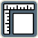

cerrar
Ayuda para el uso de las herramientas
Posiciona el mapa a la vista inicial u original.
Posiciona el mapa a una vista o emplazamiento anterior.
Posiciona el mapa a una vista o emplazamiento posterior.
Indica que puede mover el mapa en cualquier dirección con la ayuda del mouse.
Realiza un acercamiento (zoomin) al interior del mapa. Alternativa: realice doble clik en la zona preferida, o también con la rueda del mouse.
Realiza un alejamiento (zoomout) al mapa. Alternativa: con la ruefa del mouse.
Habilita poder medir distancias entre 2 o más puntos. Uso: realice un click para indicar los primeros puntos y doble click para el punto final a medir.

Habilita poder medir áreas entre 3 o más puntos. Uso: realice un click para indicar los primeros puntos y doble click para el punto final a medir.
Habilita poder obtener la información dentro de un popup de un lugar específico de cada capa. Uso: realice un click en el lugar del cual se quiere saber su información.
Abre una nueva ventana con el mapa en pantalla completa.
Pantalla táctil
Pulsar en el mapa para mostrar la información. Navegar sobre la plantalla para desplazarse en el mapa. Puntear en la pantalla para acercarce y alejarse.
Teclado / Mouse
Hacer clic en el mapa para mostrar la información. Para desplazarse, Mantener pulsado el mouse y navegar sobre el mapa, o pulsar las flechas del teclado. Para encuadrar, mantener la tecla SHIFT (MAY) pulsada y trazar un rectangulo con el mouse.
GeoBolivia
GeoBolivia
Visualizador API - GeoBolivia
 Visualizador API - GeoBolivia
Visualizador API - GeoBolivia